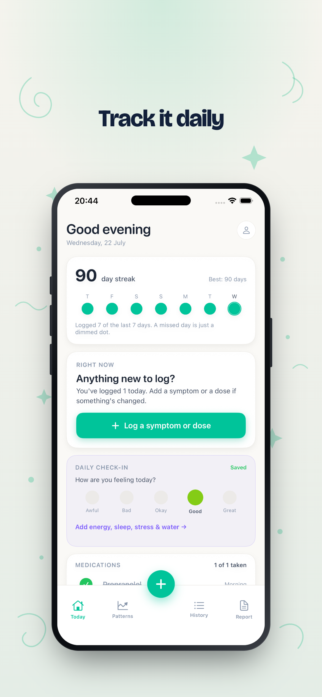
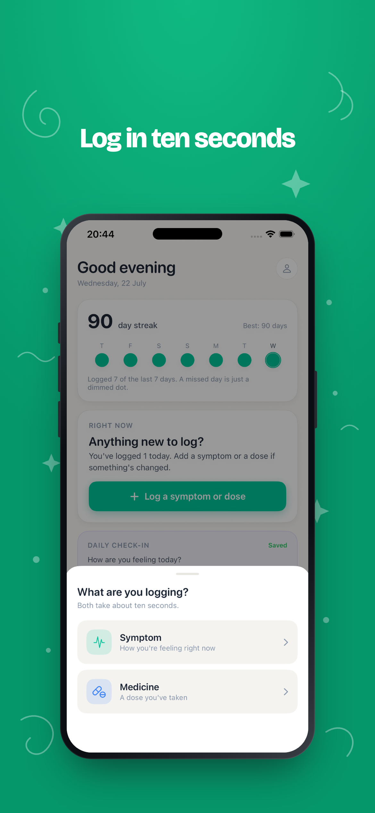
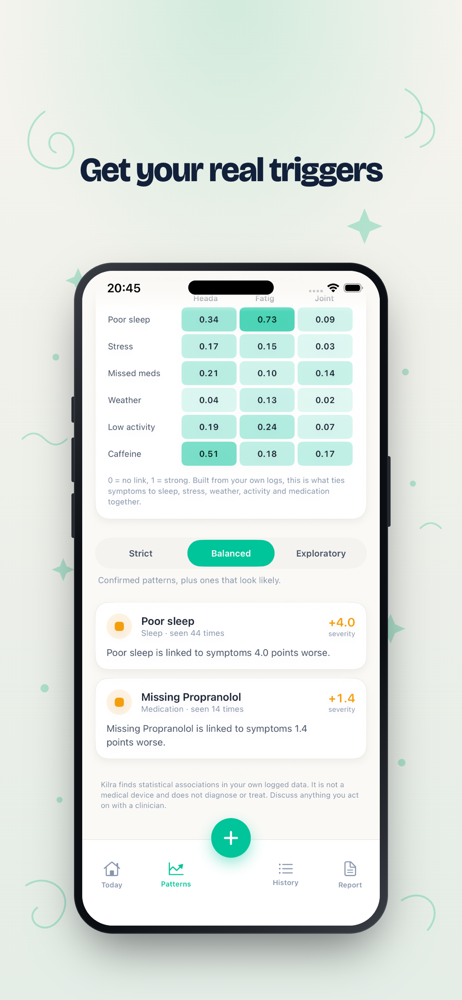

I’m a senior at Park Tudor School in Indianapolis, Indiana. I started coding at nine, following a YouTube HTML course to build a Facebook clone, and fell in love with programming. When my dad showed me ChatGPT in 2023, my focus shifted to building AI systems. More than the technology, though, my real passion is leading teams and sharing my ideas with the world, whether from a conference stage or around a small table. In my free time I’m a dedicated gymgoer (just hit 225 on bench press), a new runner training for a sub-1:55 half marathon, and a jazz musician (bass guitar on top!).
What I’m interested in.
In 1903, the New York Times argued that a working flying machine was a million years away. Sixty-nine days later, the Wright brothers flew; sixty-six years after that, we walked on the moon. Now that AI has made coding and knowledge almost free, I think humanity’s next step is to reapportion that freed-up ambition toward log-linear, outsized results. The startups that matter shouldn’t chase small things; they should take on the audacious ones, energy, physical intelligence, even interstellar travel, that today feel inconceivable.
Startup
Kilra: Digital Health OS
I built and lead the product end to end, from the custom ML models to the AI-driven growth. People log symptoms, medications, sleep, and stress, and Kilra learns how their body reacts, surfacing the real triggers behind how they feel, so they can adjust their lifestyle quickly instead of waiting on expensive, drawn-out doctor visits.



Selected research
Safe Fast Charging Robust to Battery Aging
We built a solver-free safety filter for battery fast charging. Across 156 aged-cell tests at 56 microseconds per step it produced zero failures, where the standard approach failed every time. Accepted at IEEE IECON 2026 as first author.
AI and crypto power use
Modeled the power draw of AI data centers and crypto mining, and showed that it raises grid carbon unless the load runs on surplus renewables. The result held across eight demand models. Research under Dr. Jiasun Li, presented at the George Mason student conference, with publication ongoing.
Projects
FIREWATCH: computer vision based probabilistic wildfire tracking
Built a system that fuses camera, satellite, weather and terrain into a continuously self-correcting probabilistic spread forecast, then turns it into human-in-the-loop evacuation and resource decisions. Validated it by replaying five real fires against GOES ground truth.
CROSSING: computer vision based pedestrian-vehicle safety intelligence
Built a system that watches ordinary street video, models every person, vehicle, and interaction in the scene, and predicts who a vehicle is about to hit. A learned interaction model beats an engineered time-to-collision score at forecasting near-misses (0.95 AUROC), holds its calibration, and flags a pedestrian’s intent to cross roughly 2.8 seconds before they step into the road.
Forecasting crop waste across the U.S. supply chain
Built a graph neural network that forecasts supply-chain-driven crop waste across 2,130 US counties by routing inter-regional economic shocks through a cascade diffusion model. Filed as a provisional patent with 26 claims.
GitHub repo →Selected CV
EP Industrial Coatings
Built a computer-vision quoting tool that cut quote turnaround from two weeks to five minutes at better than 90 percent accuracy, and wrote five company-wide SOPs over a five-month term.
Park Tudor VEX Robotics: Team 6842V Vicious Vortex
Captained a six-person team to eight international placements and the most wins in the world across the 2024 and 2025 seasons, with more than 20 awards. Built our autonomy stack in C++: Monte Carlo localization, pure-pursuit path following over Bézier curves, and vision sensing. Also mentored the middle school team to a state title.
VolunteerU
Cofounded a free platform that helps people launch and manage a nonprofit end to end, and helps volunteers find opportunities that actually fit them. The workspace keeps applications, roster, attendance, and verified hours in one place, so a coordinator can accept a volunteer, take attendance, and have their hours post to every record the same day.
volunteeruapp.com →Mock Trial
Cofounded and lead Park Tudor’s mock trial program, growing it from the ground up to 140 members. Ran the school’s first bipartisan roundtable, bringing four state and national officials in front of a 50+ audience, took the team to districts, and earned an Outstanding Witness award.